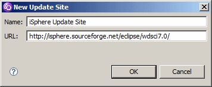

JCRCMDS Update Site WDSCi 7.0
Hi, this is the JCRCMDS plug-in update site for Websphere Development Studio Client for iSeries.
|
|
JCRCMDS Update Site WDSCi 7.0Hi, this is the JCRCMDS plug-in update site for Websphere Development Studio Client for iSeries. |
From the main menu, select "Help > Software Updates > Find and Install..." to enter the "Install/Update" dialog.
Select "Search for new features to install" and press the [Next] button:
Now click the [New Remote Site...] button to enter the URL of the JCRCMDS update site @UPDATE_SITE_URL@:

Then click the [Finish] button and follow the instructions given on the following pages.
Go to the JCRCMDS download page at SourceForge and download the zip file for your environment.
The follow these steps to create your local update site:
Go to the JCRCMDS download page at SourceForge and download the zip file for your environment.
The follow these steps to create your local update site:
The following terms are trademarks of the IBM Corporation in the United States or other countries or both:
| Version: @VERSION_NUMBER@ - Copyright: @YEAR@, JCRCMDS project owners | Updated: @TODAY@ |